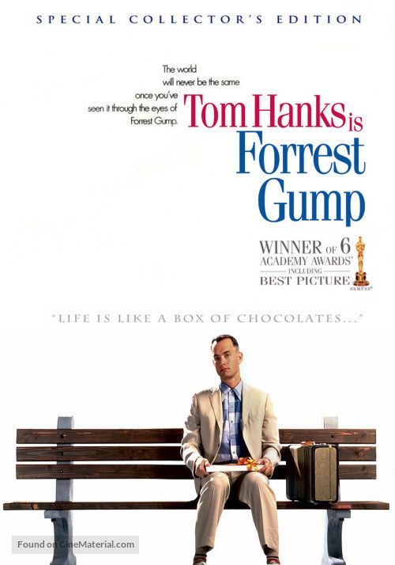

Omiljeni filmovi
| Ime filma |
Kratak opis |
Zanr |
Datum izlaska |
Cover slika |
Link |
| The Intouchables |
In Paris, the aristocratic and intellectual Philippe is a
quadriplegic millionaire who is interviewing candidates for the
position of his carer, with his red-haired secretary Magalie. Out of
the blue, Driss cuts the line of candidates and brings a document
from the Social Security and asks Phillipe to sign it to prove that
he is seeking a job position so he can receive his unemployment
benefit. Philippe challenges Driss, offering him a trial period of
one month to gain experience helping him. Then Driss can decide
whether he would like to stay with him or not. Driss accepts the
challenge and moves to the mansion, changing the boring life of
Phillipe and his employees
|
Comedy |
2011. |

|
Go to imdb
|
| The Godfather |
The Godfather "Don" Vito Corleone is the head of the Corleone mafia
family in New York. He is at the event of his daughter's wedding.
Michael, Vito's youngest son and a decorated WW II Marine is also
present at the wedding. Michael seems to be uninterested in being a
part of the family business. Vito is a powerful man, and is kind to
all those who give him respect but is ruthless against those who do
not. But when a powerful and treacherous rival wants to sell drugs
and needs the Don's influence for the same, Vito refuses to do it.
What follows is a clash between Vito's fading old values and the new
ways which may cause Michael to do the thing he was most reluctant
in doing and wage a mob war against all the other mafia families
which could tear the Corleone family apart.
|
Crime |
1972. |

|
Go to imdb
|
| Schindler's List |
Oskar Schindler is a vain and greedy German businessman who becomes
an unlikely humanitarian amid the barbaric German Nazi reign when he
feels compelled to turn his factory into a refuge for Jews. Based on
the true story of Oskar Schindler who managed to save about 1100
Jews from being gassed at the Auschwitz concentration camp, it is a
testament to the good in all of us.
|
Drama |
1993. |

|
Go to imdb
|
| Forrest Gump |
Forrest Gump is a simple man with a low I.Q. but good intentions. He
is running through childhood with his best and only friend Jenny.
His 'mama' teaches him the ways of life and leaves him to choose his
destiny. Forrest joins the army for service in Vietnam, finding new
friends called Dan and Bubba, he wins medals, creates a famous
shrimp fishing fleet, inspires people to jog, starts a ping-pong
craze, creates the smiley, writes bumper stickers and songs, donates
to people and meets the president several times. However, this is
all irrelevant to Forrest who can only think of his childhood
sweetheart Jenny Curran, who has messed up her life. Although in the
end all he wants to prove is that anyone can love anyone.
|
Drama |
1994. |

|
Go to imdb
|
| American Beauty |
After his death sometime in his 43rd year, suburbanite Lester
Burnham tells of the last few weeks of his life, during which he had
no idea of his imminent passing. He is a husband to real estate
agent Carolyn Burnham and father to high school student Jane
Burnham. Although Lester and Carolyn once loved each other, they now
merely tolerate each other. Typical wallflower Jane also hates both
her parents; the three suffer individually in silence in their home
life. Jane tries to steer clear of both her parents. Carolyn,
relatively new to the real estate business, wants to create the
persona of success to further her career, aspiring to the
professional life of Buddy Kane, the king of the real estate
business in their neighborhood.
|
Drama |
1999. |

|
Go to imdb
|